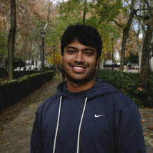

§ Artwork
Artwork
I enjoy creating photorealistic artwork in my free time.



// my face, recovered pixel-wise from a count and a Gaussian sketch — a random projection to m = 6000. Sketching happens to be one of the things I study.
Postdoctoral Scholar · University of Chicago
I am an AI/ML postdoc co-hosted by Ce Zhang and Tian Li. My research focuses on efficiency, distributed learning, and privacy. I'm also interested in numerical methods, watermarking, and translation. I received my Ph.D. in Computer Science from the University of Maryland, advised by Furong Huang.
§ News
§ Selected Works
We show that LoRA reduces memorization in federated LLM training by up to 10x without major performance loss, across high-risk domains (medicine, law, finance) and model sizes from 1B to 70B. LoRA composes naturally with other privacy techniques like gradient clipping, secure aggregation, and Goldfish loss for further protection.
Key findings of our 2024 NeurIPS competition. Spoiler: the winners were really good at removing watermarks! Bonus: we've released all submissions to help further research on robust watermark design.
We systematically reveal weaknesses in modern image-based watermarking protocols, including generative approaches. Check out the benchmark at wavesbench.github.io.
Using a new family of hash functions, we develop one of the first private, personalized, and memory-efficient on-device LSH frameworks for training recommender DNNs on extreme multi-label datasets.
We enable wait-free model training for peer-to-peer FL using model caching. Provable convergence at SotA rate; empirically significantly speeds up global model convergence.
A sketch-based algorithm whose training time and memory grow sublinearly w.r.t. graph size by training GNNs atop compact sketches of graph adjacency and node embeddings.
We determine that all groups of order 256 not excluded by the two classical nonexistence criteria contain a difference set, resolving a 25-year-old question posed by John Dillon.
We provide novel momentum-based power methods, DMPower and DMStream. In contrast with prior art, these accelerated methods do not depend on spectral knowledge.
A GPU algorithm for convolution with decomposed tensor products. Up to 4.85x faster execution than cuDNN for some tensors.
We examine recent construction techniques of Hadamard difference sets in 2-groups and an extension of orthogonal building sets to nonabelian groups.
We use Bhargava's theory of escalators to establish infinite families of positive integers without unique minimal forcing sets.
We give a construction of a [30,10,11] non-cyclic code that improves upon the [30,10,10] code described in Samsung's patent US 7706348.
§ Artwork
I enjoy creating photorealistic artwork in my free time.